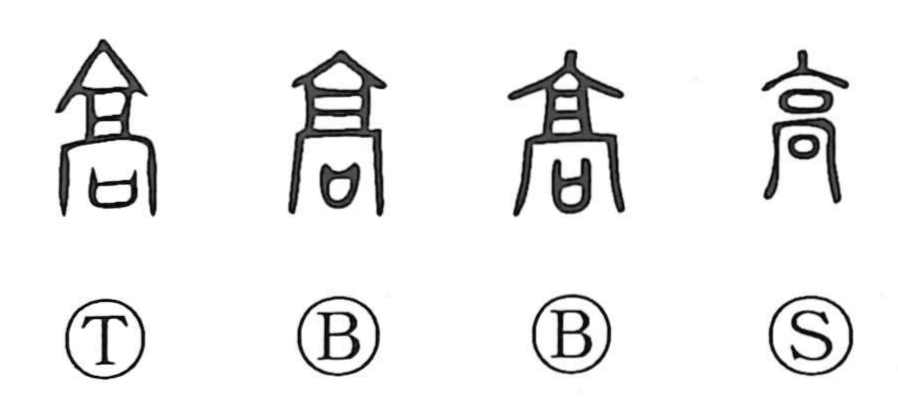

高

Kun: takai, taka, takamaru, takameru | On: kou
high ・ tall ・ elevated ・ noble
Explanation
高 combines the great gate represented by 京 with 口, the vessel holding written prayers. The gate has an arched entrance beneath a watchtower. Prayers are presented at this imposing threshold to keep harmful spirits from entering.
The protected gate is a high structure, giving high, tall, great, and outstanding. Its upper chamber makes physical height visible, while its sacred protection gives the entrance a special dignity.
The word extends to elevated position, rank, and excellence. It can describe a high place, an accomplished person, or a noble and refined quality. The same architectural family includes 喬, where an additional ornament above the gate invites the divine presence.